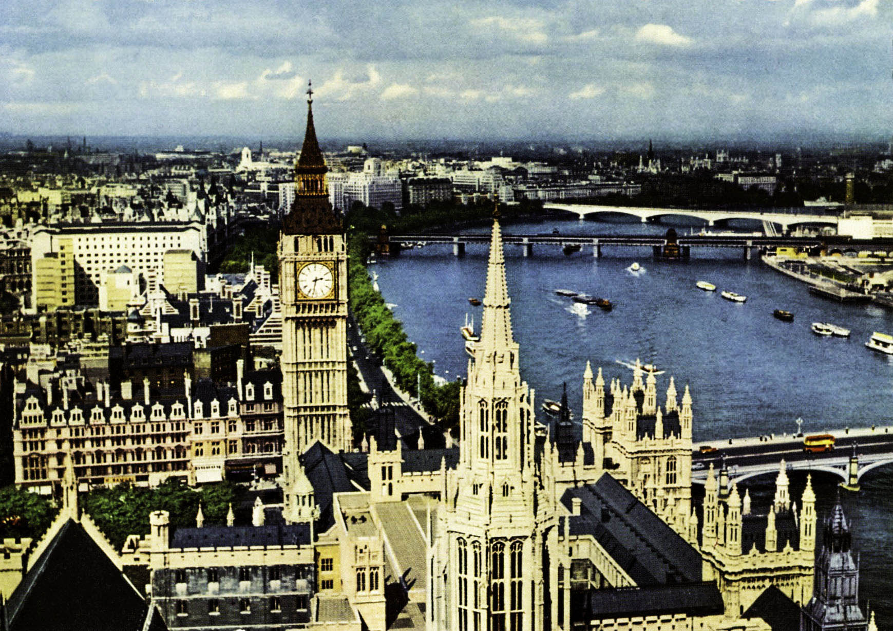
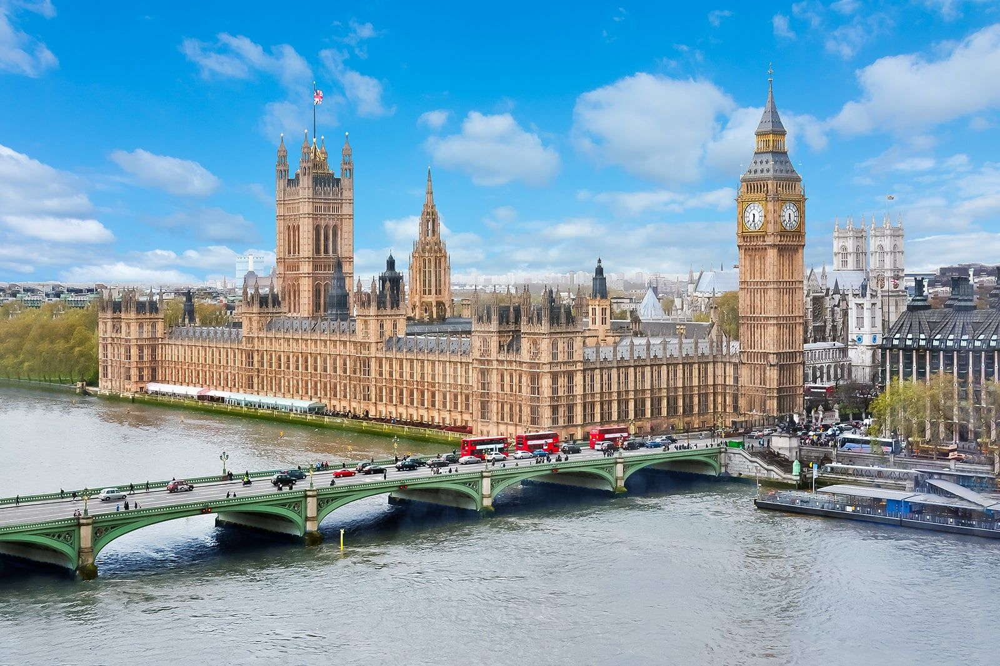

O turismo em Londres tem raízes profundas, ligadas ao papel histórico do Reino Unido como potência global. Desde o período vitoriano, a cidade já atraía visitantes interessados em cultura, política e comércio. Com o passar do tempo, Londres se reinventou como uma metrópole global, equilibrando tradição e inovação.
A cidade recebe cerca de 20 milhões de turistas internacionais por ano, com receitas que giram em torno de £15 a £20 bilhões anuais. Londres é uma das cidades mais visitadas da Europa e possui uma forte taxa de retorno, impulsionada por sua diversidade cultural, eventos e facilidade de acesso.
Entre os principais pontos turísticos estão o Big Ben, o Palácio de Buckingham e a Tower Bridge. Museus como o British Museum e a London Eye também são destaques, além dos famosos teatros do West End.


Para voltar à página principal, clique aqui.